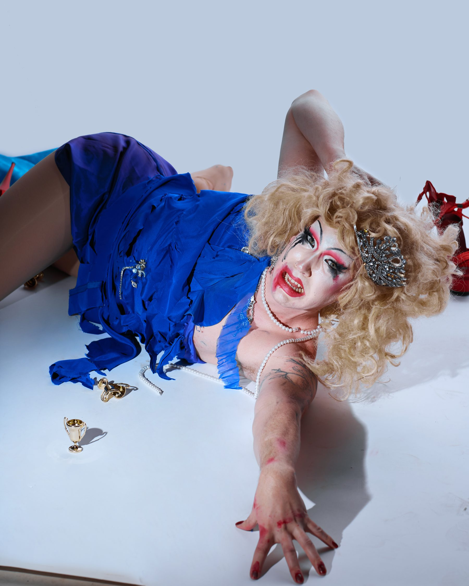

Seattle · drag · words · pixels
Miss Texas 1988!
Drag artist, performer, host, writer, and all-around creative oddball. Dabbling in everything from the silly to the sublime — with curiously crafted costumes and climactic characters.

Three sides, one oddball
A multi-hyphenate
A multi-hyphenate
operation.
01
Drag
Costumes, characters, comedy, lip-sync, hosting. Across Seattle's stages and on OUTtv as the winner of Camp Wannakiki S5.
→ 02Writing
Reporting, criticism, and queer cultural coverage for The Stranger — Seattle's alt-weekly of record.
→ 03Design
Motion graphics, magazine layouts, and UI/UX work. Build-it-and-tear-it-apart visual play.
→S5
winner
winner
OUTtv
Camp Wannakiki Season 5
The campiest, sweatiest, most unhinged drag competition on the air — and Miss Texas 1988 took home the crown.
More on the win →
A taste